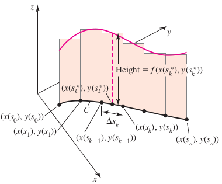

Suppose the scalar-valued function f is defined on the smooth curve C:r(s)=⟨x(s),y(s)⟩, parameterized by the arc length s. The line integral of f over C is
provided this limit exists over all partitions of C. When the limit exists, f is said to be integrable on C.

EXAMPLE 1 Average temperature on a circle
The temperature of the circular plate R={(x,y):x2+y2⩽1} is T(x,y)=100(x2+2y2). Find the average temperature along the edge of the plate.
Solution
Calculating the average value required integrating the temperature function over the boundary circle C={(x,y):x2+y2=1} and dividing by the length (circumference) of C.
∫CT(x,y)ds=300π
Evaluating Scalar Line Integrals in \R^2
Left f be continuous on a region containing a smooth curve C:r(t)=⟨x(t),y(t)⟩, for a⩽x⩽b. Then
Evaluate ∫C(xy+2z)ds on the following segments.
a. The line sements from P(1,0,0) to Q(0,1,1).
b. The line sements from Q(0,1,1) to P(1,0,0).
Solution
Both a and b yield the same result 673. A scalar line integral is independent of the orientation and parameterization of the curve.
EXAMPLE 4 Flight of an eagle
An eagle soars on the ascending spiral path C:r(t)=⟨x(t),y(t),z(t)⟩=⟨2400cos2t,2400sin2t,500t⟩, where x,y and z are measured in feet and t is measured in miniutes. How far does the eagle fly over the time interval 0⩽t⩽10?